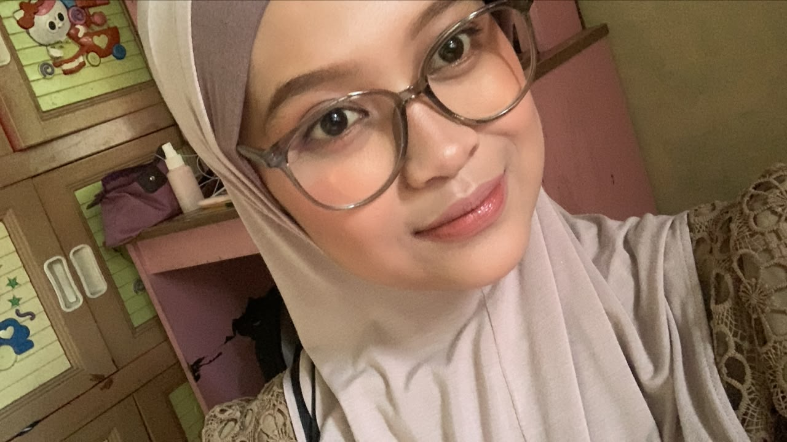

Login Dulu Nyakkk
Silakan masukin nama lengkapnya dan sandinya bebas untuk membuka halaman ini.
Masukkan yang bener ngapa.
Sandi tidak boleh kosong.
Silakan masukin nama lengkapnya dan sandinya bebas untuk membuka halaman ini.

“Haii… at the time gua pernah bilang buat bikin web buat lu. Dan yahh, akhirnya gua tepatin janji itu, hari ini gua selesai bikin web ini khusus buat lu.
But, disini gua disclaimer dulu, gua belum terampil bikin kayak gini. Dan ini adalah first-nya gua buat bikinin orang web khusus. Jadi, maaf yaa kalau kurang memuaskan dan narasi nya yang kurang baik. Enjoyy 😊”

Adelia Putri, nama yang sangat bagus, bahkan memiliki arti ‘Anak Perempuan yang mulia’ atau kalau dalam Bahasa Jerman itu mencerminkan seorang putri dari bangsawan.
Dia memiliki pribadi yang baik, lembut, pinter, ramah, lucu, cantik, manis yaa pokoknya gitu deh, kalau disebut disini kepanjangan hehehe… Dia juga asik banget dah orangnya apalagi kalau diajak discuss beuhhhh. Bisa jadi seorang pekerja keras dan independent itu adalah suatu kebanggaan menurut gua. Proud of you…
Kadang, sifat lucu yang gua suka adalah ketika ada orang yang cuma ngasih info ke lu setengah-setengah wkwk. Suka lucu lihatnya kalau pas lagi penasaran, makanya gua selalu bilang ke orang yang emang mau ngasih info atau apapun ke lu: “Dia jangan dikasih setengah-setengah, kalau engga lu bakal dikecer abis-habisan ama dia wkwk.”
Tapi, Entah kenapa lu semenarik dan seperfect itu dimata gua, vibe nya selalu bawa hal hal yang supportif dan positif kalii laa. Sebenarnya masih banyak hal yang pengen banget diketahui biar bisa ngenal lu, semua hal mau itu baik ataupun buruk. Karena, pengen memahami segalanya siii hehe wkwk.
Pertama kali gua mendengar nama ‘Adelia’ pas Fawaz manggil nama itu ketika lagi bareng gua ngopi di warung si ibu di kampus A Cibinong pada saat rapat gabungan antara panitia Kampus A dan Kampus B. Waktu itu mungkin terdengar asing karena nama itu pertama kali gua dengar.
Singkat cerita sampai pada hari H di mana acara penerimaan mahasiswa baru digelar, gua nggak kepikiran kalau nanti gua bisa akrab dengan beberapa panitia yang belum gua kenal. Tapi di hari itu entah gimana skenarionya, momen di mana gua bisa ngobrol sama lu muncul pas lagi hectic-nya masalah almet hahaha. Walaupun ini hanya beberapa kalimat yang keliatannya so asik, tapi itu awal mulanya.
Sampai ada momen istirahat di mana posisi duduk gua persis di samping lu. Gua bingung mau ngomong apa, tapi akhirnya kenalan, mutual IG, bisa bercanda bareng dan lainnya. Di situ gua mikir: “Kok asik banget yaa, gua kira bakal awkward gitu ternyata engga.”
Sampai keakraban itu berujung di chaos-nya setelah acara wkwk. Lu mengeluarkan skill tenaga kesehatan itu yang bikin gua kek: “What?? Damn ga tuuu wkwk” sampe gua harus temenin nakes ini yang motornya ada di ujung kegelapan wkwk.
Setelah itu jujur nggak ada kepikiran emang nanti masih bisa ngobrol lagi? Apa nanti bisa ketemu lagi? Who knows yang gua nggak expect adalah malam itu lu save kontak gua, dan pas itu gua kaget, gua kira cuman mutualan IG terus yaudah aja, ternyata bisa kontekan akhirnya. Gua seneng kaliii laaa xixixi…..
Dari awal gua sama lu chattingan, gua awalnya menganggap semua biasa aja, semua berjalan selayaknya teman aja. Tapi entah seiring berjalannya waktu, tiap hari chattingan, waktu demi waktu gua ngerasa ada yang beda. Gua mulai ngerasa nyaman karena ada lu. Baru aja gua dapet perhatian gini, bahkan di hal-hal kecil pun tetep support dan itu yang bikin gua bangkit dan gua punya harapan buat ngelanjutin hidup wkwk. Agak aneh mungkin tapi kenyataannya gitu.
Lho kok bisa? Gua pikir ini cuman sesaat aja, namun ini terus melekat. Gua sempet mikir kok gua bisa suka ya? Gua nggak punya alasan pasti, tapi yang jelas gua suka semua tentang lu walaupun pasti yaa semua orang hanya munculin sisi baiknya. Kayak yang lu bilang: “Mungkin lu hanya interest sesaat dan itupun baiknya.”
But, gua pengen tau segalanya tentang lu, gua nggak mau hanya suka baiknya aja. Karena dari dulu pun, kalau gua suka sama orang gua selalu sukain baik dan buruknya, karena gua juga manusia punya sisi baik dan buruk. Kalau gua mau diterima sama orang maka gua harus bisa nerima semua yang orang punya juga. Jadi begitu deh xixi…..
Setelah gua tahu pada akhirnya itu nggak akan berbalik, gua nggak kecewa kok. Karena gua tahu posisi gua, gua sadar akan diri gua jadi gua nggak berharap lebih banyak, soalnya kan rasa kecewa itu timbul dari harapan lebih yakann? wkwk.
Jadi, jangan pernah klaim nanti kedepannya kalau lu nya yang jahat atau yang salah yaa Adell 😊. Kayak yang lu sampein waktu itu takutnya ada klaim gitu kesannya. Karena mungkin gua datang di waktu yang salah aja, mungkin karena keadaan dan momennya yang belum tepat. Karena even gua ataupun lu pasti punya trauma masing-masing dan yang akan selalu aware ketika ada orang datang karena nggak mau kejadian atau luka yang sama terulang kembali.
Maka dari itu, gua nggak berharap sepenuhnya. Gua ngungkapin itu karena gua waktu itu mikirnya siapa tahu punya perasaan yang sama, namun ternyata engga dan it’s okay xixi…..
“Ibarat kita jalan ke sebuah taman bunga dan melihat bunga paling indah di taman itu... kalau kita terlalu egois ingin mencabut dan memilikinya, ia malah akan layu dan mati. Cukup mengaguminya dari jauh itu akan membuat bunganya akan terus tumbuh dan mekar dengan indah.”Gua mau sampein rasa terima kasih sama lu. Dengan lu, gua punya alasan buat improve, gua punya alasan buat bangkit dari diri gua.
Thanks juga karena selalu support gua, selalu ngasih hal-hal baik ke gua yang di mana dari semua hal itu akhirnya gua ngerasa gua diperhatiin.
Makasih jugaa lu selalu mau denger semua cerita gua tanpa adanya judgement dan ilfeel. Sampai di tahap gua cuman bisa sebatas mengagumi aja itu di tahap kebahagiaan yang indah menurut gua. Karena sesuai banget apa yang dibilang Zein, gua sebahagia dan seseneng serta sebersyukur itu ketemu lu xixi….. Big Thanks For U, Adelia Putri.